omarchy/themes
The Extra Themes
Copy a theme’s GitHub URL and pick Install > Style > Theme in the Omarchy menu (Super + Space). Remove it again with Remove > Theme. Made your own? Add it with a pull request to the omarchy-site repo.
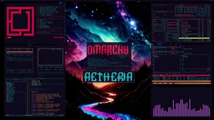
Aetheria↗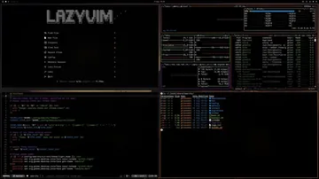
All Hallow's Eve↗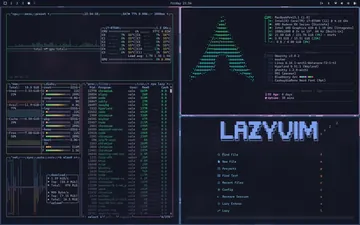
Arc Blueberry↗ Ash↗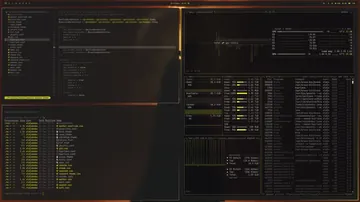
Batman↗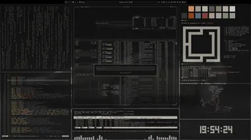
Batou↗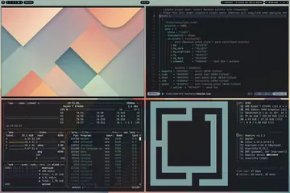
Bauhaus↗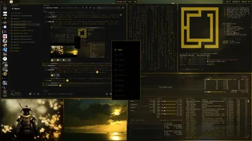
Black Gold↗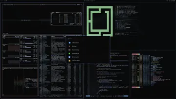
Catppuccin Mocha Dark↗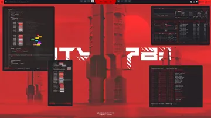
City-783↗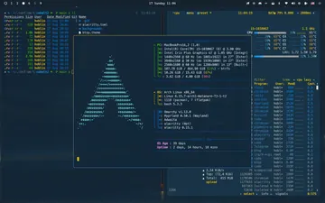
Cobalt2↗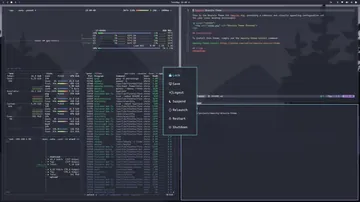
Dracula↗ Eldritch↗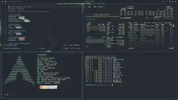
Evergarden↗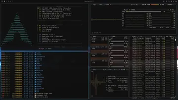
Flexoki Dark↗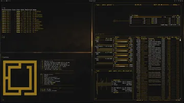
Gold Rush↗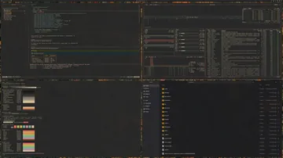
Gruvbox Material↗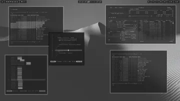
Hinterlands↗ Matrix↗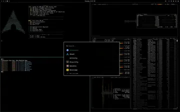
Midnight↗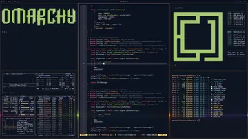
Monokai↗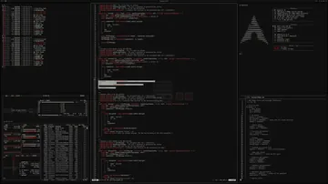
NES↗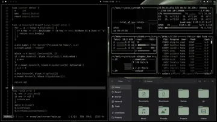
Noir↗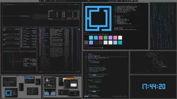
Oxo Carbon↗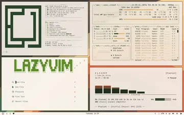
Ristretto Light↗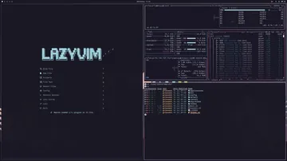
Rose Pine Dark↗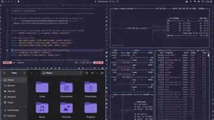
Rose Pine Moon↗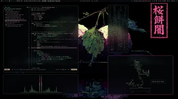
Sakura Mochi↗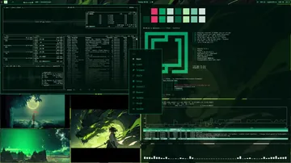
Shades of Jade↗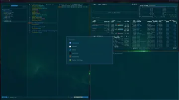
Solarized↗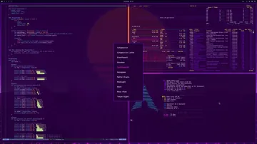
Synthwave '84↗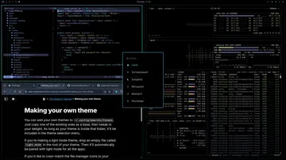
Tokyo Night OLED↗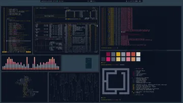
Velvet Night↗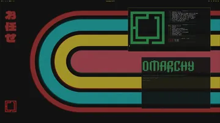
VHS 80↗